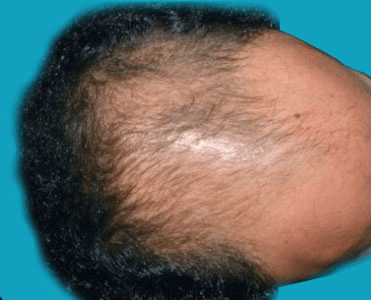
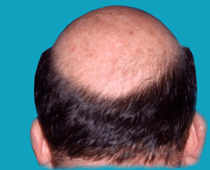

Men with limited hair loss can sometimes hide hair loss with the right haircut or hairstyle. Ask your hairstylist for a creative cut that will make thinning hair look fuller.
Wigs can cover thinning hair, receding hairlines, and complete baldness. They come in a variety of styles, colors, and textures. For a natural look, choose wig colors, styles, and textures that look similar to your original hair. Professional wig stylists can help style and fit wigs for an even more natural look.
Hair weaves are wigs that are sewn into your natural hair. You must have enough hair to sew the weave into. The advantage to weaves is they always stay on, even during activities such as swimming, showering, and sleeping. The disadvantages are they must be sewn again whenever new hair growth occurs, and the sewing process can damage your natural hair.
Minoxidil (Rogaine) is a topical medication applied to the scalp. Minoxidil
slows hair loss for some men and stimulates the hair follicles to grow new hair.
Minoxidil takes four months to one year to produce visible results. Hair loss often
happens again when you stop taking the medication.
Possible side effects associated with minoxidil include dryness, irritation,
burning, and scaling of the scalp. You should visit the doctor immediately if
you have any of these serious side effects:
Finasteride (Propecia, Proscar) is an oral medication that slows hair loss in some men.
It works by blocking the production of the male hormone responsible for hair loss.
Finasteride has a higher success rate than minoxidil. When you stop taking finasteride,
your hair loss returns.
You must take finasteride for three months to one year before you see results.
If no hair growth occurs after one year, your doctor will likely recommend that
you stop taking the medication. The side effects of finasteride include:
A hair transplant is the most invasive and expensive treatment for hair loss. Hair
transplants work by removing hair from areas of the scalp that have active hair
growth and transplanting them to thinning or balding areas of your scalp.
Multiple treatments are often necessary, and the procedure carries the risk of
scarring and infection. The advantages of a hair transplant are that it looks
more natural and it’s permanent.
Going bald can be a big change. You may have trouble accepting your appearance. You should seek counseling if you experience anxiety, low self-esteem, depression, or other emotional problems because of male pattern baldness.